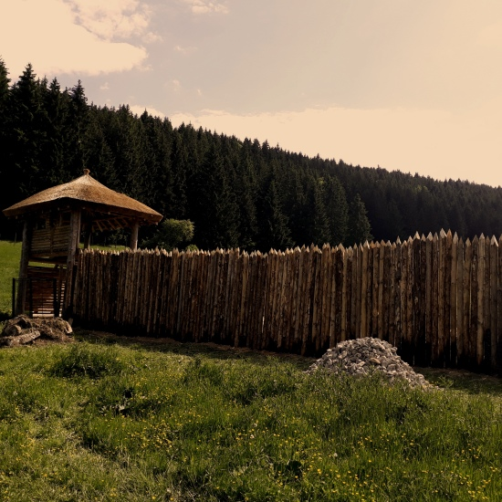
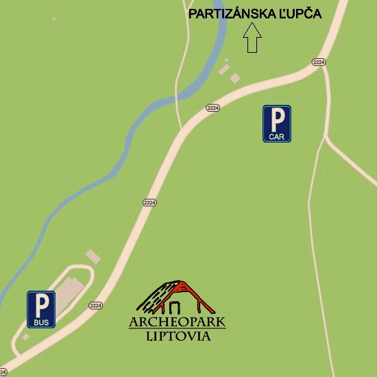
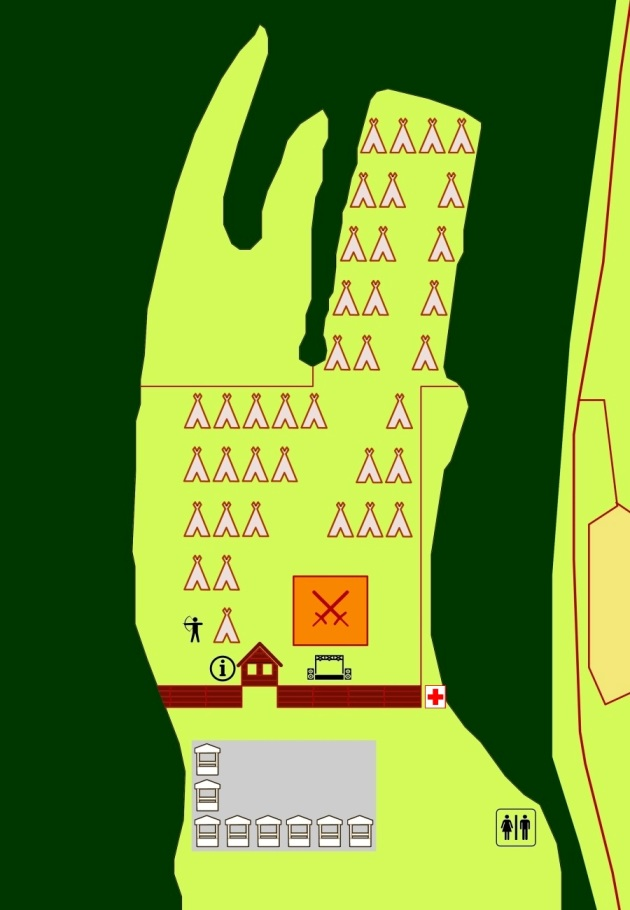

Lokácia na Google Mapách:
Foto:
Mapka:
Areál:
LOKALIZÁCIA MIESTA
Archeopark Liptovia
Partizánska Ľupča
GPS: 49.0442889N, 19.4257486E
VJAZD VOZIDIEL, PARKOVANIE A OBMEDZENIA
Parkovanie vozidiel návštevníkov bude možné iba na vyznačených parkovacích plochách. Na mieste sa budú nachádzať označení usporiadatelia, ktorí budú vodičov usmerňovať. Vjazd vozidlami k areálu, okrem vozidiel nevyhnutného zásobovania, nebude možný z dôvodu zachovania dobovej atmosféry festivalu.
PODMIENKY VSTUPU
Do historického tábora v areáli archeoparku bude divákom umožnený vstup výlučne vo vymedzenom čase a to počas programu. V ostatnom čase bude areál pre divákov uzatvorený. Stanovanie divákov pri areáli a v jeho blízkosti nebude možné. Dôvodmi sú, využitie priľahlých pozemkov výlučne za účelom konania kultúrneho podujatia a zachovania dobovej atmosféry festivalu.
OCHRANA PRÍRODY A KRAJINY
Nakoľko sa miesto konania festivalu nachádza na území ochranného pásma NP NT, kde platí 2. stupeň územnej ochrany, upozorňujeme návštevníkov na povinnosť dodržiavania predpisov na úseku ochrany prírody a krajiny.Na mieste bude dostatok smetných nádob na odpadky.
VSTUPNÉ
Deti: 3€
Dospelí: 6€
Vstupenky budú vo forme identifikačných náramkov zakúpených na mieste.